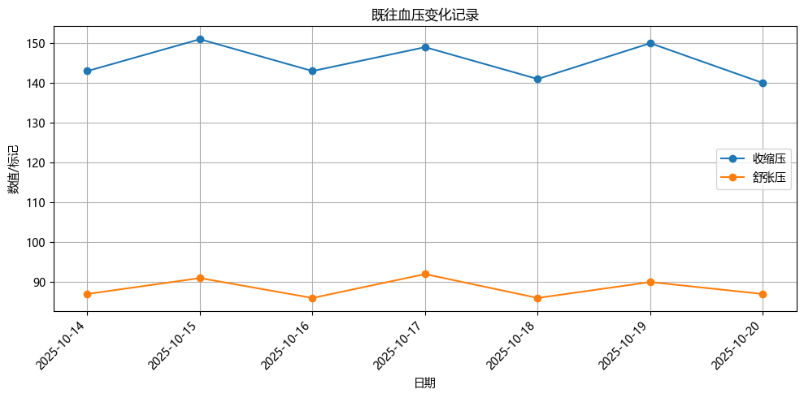
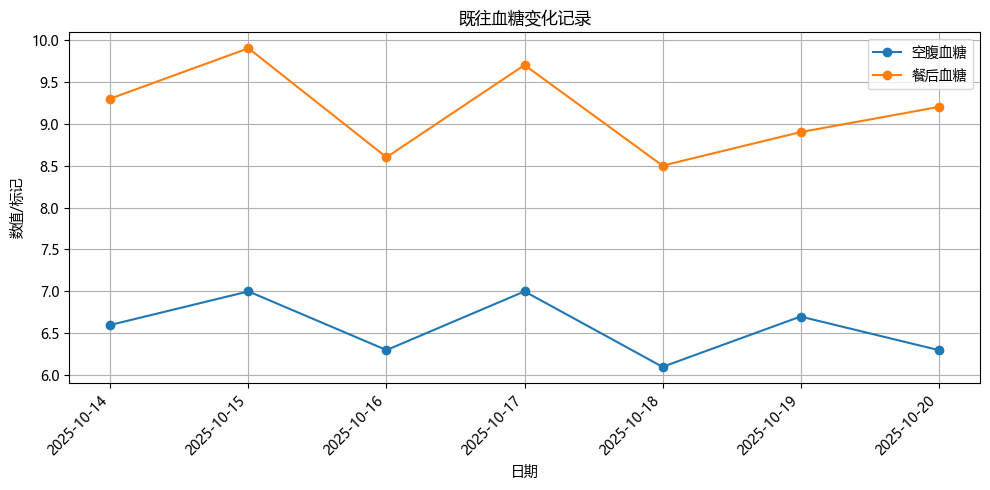
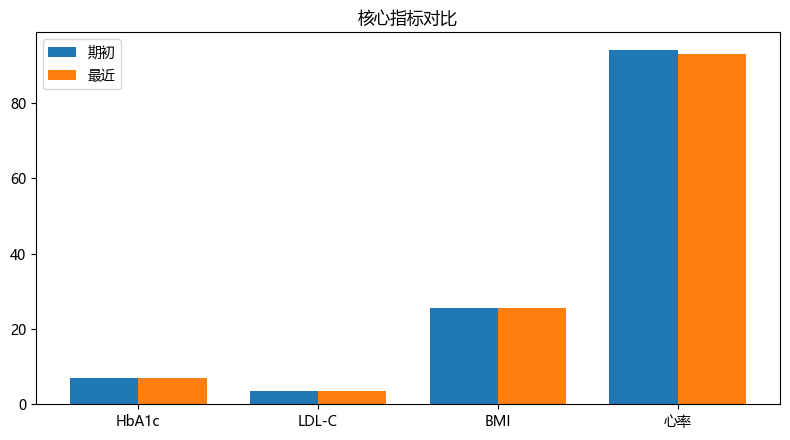
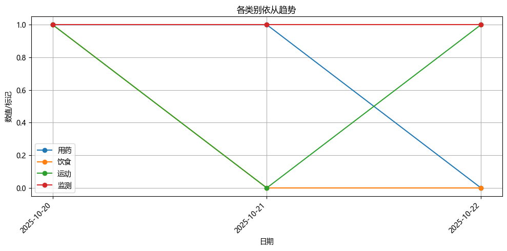
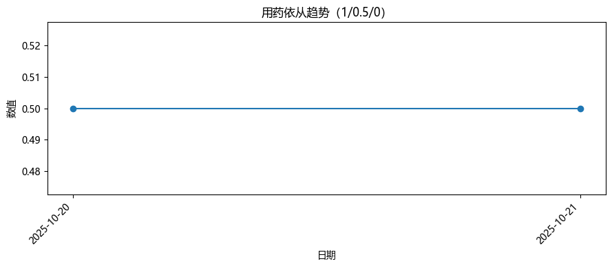

📝 全局评估（医生）
评估内容自动保存到浏览器（仅本机）。每份报告的评估独立存储。
慢病阶段管理周报（医生版）
🚨 紧迫程度评估
一、基本信息
- 姓名：None
- 性别：男
- 年龄：68
- 职业：退休工人
- 文化程度：初中
- 家庭情况：与家人同住
- 联系方式：138-1234-5678
- 过敏史：青霉素
- 既往史：II型糖尿病、高血压、慢性阻塞性肺疾病
- 家庭支持情况：—
二、主要疾病诊断及治疗
- 疾病名称：II型糖尿病 （ICD10: E11）
- 当前病情：中度
-
当前用药：二甲双胍缓释片 500毫克，每日两次 每日两次，早餐及晚餐后口服（口服）；氨氯地平片 5毫克，每日一次 每日一次，早晨口服（口服）
-
疾病名称：高血压 （ICD10: I10）
- 当前病情：可控
-
当前用药：二甲双胍缓释片 500毫克，每日两次 每日两次，早餐及晚餐后口服（口服）；氨氯地平片 5毫克，每日一次 每日一次，早晨口服（口服）
-
疾病名称：慢性阻塞性肺疾病 （ICD10: J44.9）
- 当前病情：轻度
- 当前用药：二甲双胍缓释片 500毫克，每日两次 每日两次，早餐及晚餐后口服（口服）；氨氯地平片 5毫克，每日一次 每日一次，早晨口服（口服）
三、核心监测指标
| 指标 | 当前值 | 测量时间 | 推荐目标 | 是否达标 | 是否需要复查 |
|---|---|---|---|---|---|
| 血压 | 140/87 mmHg | 2025-10-20 | < 140/90 mmHg | 未达标 | |
| 空腹血糖 | 6.3 mmol/L | 2025-10-20 | < 7.0 mmol/L（空腹） | 达标 | |
| HbA1c | 7.0% | 2025-10-20 | < 7.0% | 未达标 | |
| LDL-C | 3.4 mmol/L | 2025-10-20 | < 2.6 mmol/L | 未达标 | |
| BMI | 25.5 kg/m² | 2025-10-20 | 18.5–24.9 kg/m² | 未达标 | |
| 心率 | 93 bpm | 2025-10-20 | 60–100 bpm | 达标 | |
| 肾功能 | eGFR 69 ml/min/1.73m² | 2025-10-20 | eGFR ≥ 60 ml/min/1.73m² | 达标 |
指标趋势图
血压变化

血糖变化

体重/BMI/心率对比

四、生活方式处方
- 饮食：低盐低脂，多食蔬菜水果，减少甜食摄入
- 运动：+步行30分钟/天，根据肺功能调整强度
- 睡眠：+保持充足睡眠，避免疲劳
- 心理：+进行深呼吸练习，减轻心理压力
五、重点遵从任务清单
| 任务 | 执行频率 | 核心说明 |
|---|---|---|
| 血糖自测 | 每日至少1次 | 使用指尖采血仪记录数据 |
| 按时服药 | 每日两次 | 饭后半小时内服用所有药物 |
| 定期复诊 | 每季度一次 | 及时就诊、告知异常情况 |
六、健康管理提示（来源：AI智能分析）
1. 用药行为管理
- 状态：患者用药依从性部分遵从，存在服药时间不固定、偶尔忘记服药、调整剂量及时间的情况。
- 建议：建议使用手机闹钟提醒服药，将二甲双胍与早餐后固定时间结合，减少胃部不适；氨氯地平需按时服用，避免漏服。可考虑分装药物或使用智能药盒辅助管理。
- 医生补充：关注患者对副作用的担忧，评估是否需要调整药物种类或剂量；加强家庭支持和随访频率。
- 风险提示：不规律服药可能导致血糖和血压控制不佳，增加心脑血管事件风险。
2. 指标监测
- 状态：患者血糖控制良好（HbA1c 7.0%），但血压偏高（140/87 mmHg），LDL-C升高（3.4 mmol/L），BMI超标（25.5 kg/m²），需加强监测。
- 建议：每日至少检测一次空腹血糖，每周测量血压1-2次；定期复查血脂、肾功能；使用手机提醒功能辅助监测。
- 医生补充：注意患者血糖仪使用不规律，需强化教育并提供操作指导；关注血压波动及血脂异常对心血管的影响。
- 风险提示：血压和血脂控制不佳可能加速动脉粥样硬化，增加心脑血管疾病风险。
3. 运动管理
- 状态：患者运动基本遵从，每天散步30分钟，但因天气影响运动量减少。
- 建议：鼓励在天气允许时坚持户外活动，如晴天增加步行时间至45分钟；室内可进行轻柔拉伸或呼吸训练以保持活动量。
- 医生补充：根据肺功能调整运动强度，避免剧烈运动；建议结合深呼吸练习改善肺功能。
- 风险提示：缺乏持续运动可能导致体重增加、胰岛素敏感性下降及心血管功能减弱。
4. 饮食管理
- 状态：患者饮食总体符合低盐低脂要求，但口味偏咸，难以完全达到清淡饮食标准。
- 建议：逐步减少盐分摄入，尝试用香料替代部分盐分；增加蔬菜水果比例，减少甜食；家人协助监督饮食习惯。
- 医生补充：建议定期营养评估，必要时提供个性化饮食方案；关注钠摄入对高血压的影响。
- 风险提示：高盐饮食可能加重高血压，增加心血管负担；高脂饮食易导致血脂异常。
5. 心理与家庭支持
- 状态：患者心理状态尚可，有深呼吸练习减轻压力，但存在对扎针的恐惧和操作困难。
- 建议：鼓励使用指尖采血仪时采用放松技巧，如深呼吸缓解紧张情绪；家人可协助操作以增强信心。
- 医生补充：关注患者对医疗行为的焦虑情绪，必要时提供心理疏导；加强家庭支持系统建设。
- 风险提示：心理压力可能影响血糖控制，恐惧情绪可能导致监测依从性进一步下降。
七、依从性与APP使用情况
- 打卡情况：近月打卡 3 天
- 症状反馈：症状反馈 0 次
- 在线咨询：线上咨询 0 次
- 问卷完成情况：问卷 0 次
- 依从性总体：近8条记录，完全遵从 12.5%
依从性趋势图

八、AI 综合分析
- 总结：患者为68岁男性，患有II型糖尿病、高血压及慢性阻塞性肺疾病，目前基础指标控制尚可，但存在用药不规律、监测不足、饮食偏咸等问题。患者依从性整体偏低，需加强健康管理支持。
- 风险评估：主要风险包括：血压未达标、血脂异常、BMI超标、用药不规律、血糖监测不足、心理焦虑及社会支持不足。长期不遵从可能导致心脑血管事件、糖尿病并发症及肺功能恶化。
- 个性化建议：['制定个性化服药提醒计划，使用智能药盒或手机闹钟辅助管理', '加强家庭支持，由家属协助监督用药及监测行为', '定期复查血压、血脂及肾功能，调整治疗方案', '开展健康教育，提升患者对慢性病管理的认知和信心', '推荐使用血糖监测提醒功能，提高监测频率和准确性', '鼓励患者参与社区健康活动，增强社交支持和运动积极性', '必要时提供心理干预，缓解对医疗行为的焦虑情绪']
报告生成日期：2025-10-21 报告周期：2025-10-14 至 2025-10-20
附：依从性可视化

